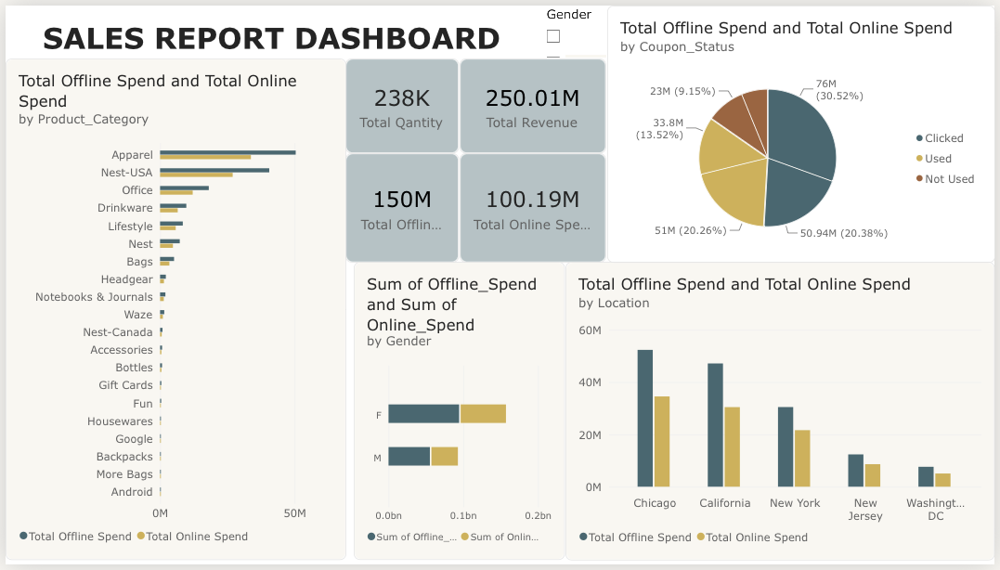
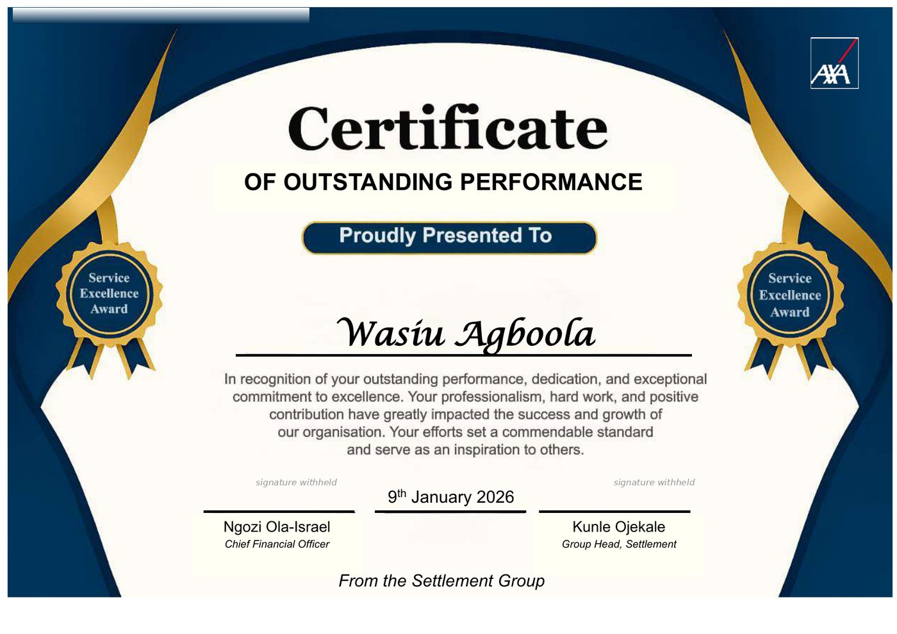

What you get
Executive summary, company overview, market research, competitor and SWOT analysis, marketing strategy, and management structure.
Financial Analyst | MBA, Financial Management
Finance professional with 4 years in insurance financial operations. I reconcile 16 ledgers and bank accounts, analyze 500+ daily inflow transactions, and turn messy financial data into clear reports using Excel, Power Query and Power BI.
I'm a Life Inflow Officer at AXA Mansard Insurance PLC. I own daily and month-end reconciliations, inter-company ledger postings and direct debit performance analysis, and I work with other teams to resolve variances. I'm now moving into financial analysis, applying my reconciliation discipline and data skills to budgeting support, forecasting and business performance analysis.
Sept 2022 to present
Nov 2020 to Apr 2021
I write investor-ready business plans for founders, backed by an MBA in Financial Management and hands-on experience building and funding my own company. Every plan has a financial model that adds up.
Executive summary, company overview, market research, competitor and SWOT analysis, marketing strategy, and management structure.
Five-year profit and loss, balance sheet, cash flow, break-even and sensitivity analysis, built in Excel so you can edit it.
You send a short brief. I send questions and a draft. We revise until it fits your goal, whether that is a loan, a grant or an investor pitch.
A full real estate and agribusiness plan I wrote for my own company. A sanitized sample is available on request.
★★★★★ 5.0
“He did an excellent job, very professional and delivered on time. I'm super happy with the delivery and will definitely use this gig again.”
cherylhhuot, Fiverr buyer. Rated 5.0 for communication, quality and value.
★★★★★ 5.0
“Great service! With the little information i provided, this seller was able to do justice to my business plan.I recommend this gig to anyone.”
Linda B, Fiverr buyer. Rated 5.0 for communication, quality and value.
Daily verification of bank inflows, policy-ledger posting, reclassification, callover and follow-up on outstanding items.
Excel tool that reads a daily bank statement, identifies each customer's policy from the payment remark, assigns the correct product ledger, and generates the upload files with built-in reconciliation checks. Ambiguous or conflicting lines are held for review instead of guessed. Formulas only, no macros.
Excel tool that compares the daily bank statement with the cash posting report, pulls each payment's unique reference from the remark, and flags unposted, mismatched and duplicate items for follow-up. Formulas only, no macros. A demo with fictional data is available on request.
Repeatable data preparation and operational reports built with advanced Excel and Power Query.

Interactive dashboard built on a sample online shopping dataset using data modeling and DAX measures. It shows 250.01M total revenue and 238K units, compares offline (150M) and online (100.19M) spend, and breaks results down by product category, location, gender and coupon status.
LAUTECH, 2026
LAUTECH, Second Class Upper, 2022
Completed December 2021. ICAN student member.
Certificate of Outstanding Performance from the Settlement Group, 9 January 2026. Signed by the Chief Financial Officer and the Group Head, Settlement.

I'm open to Financial Analyst roles, business plan writing for startups, and freelance projects in financial operations, reconciliation, Excel and Power Query automation, reporting and data analysis.